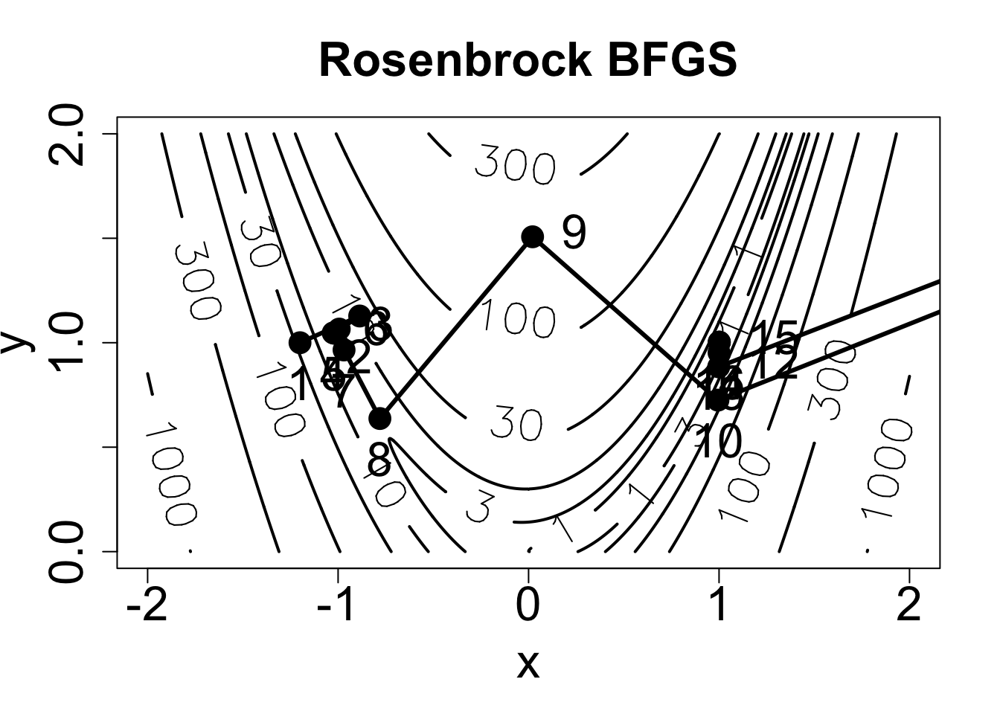

bfgs <- function(par, fn, gr, ..., control){
control <- modifyList(list(
maxit = 100, debug = FALSE,
ctol = 1e-10, gtol = 1e-7, stol = 1e-7), control)
if (control$debug) print(control)
n <- length(par)
H <- diag(n)
g <- gr(par, ...)
alpha <- min(1, 1. / sum(abs(g)))
new_par <- par - alpha * g
s <- -alpha * g
y <- gr(new_par, ...) - g
ys <- sum(y * s)
H <- ys / sum(y * y) * diag(n)
if (control$debug) cat("Initial Hessian:", H, "\n")
cost <- rep(0, control$maxit + 1)
gnorm.hist <- rep(0, control$maxit + 1)
par.hist <- matrix(0, nrow = control$maxit + 1, ncol = n)
for (iter in seq_len(control$maxit)) {
cost[iter] <- fn(par, ...)
gnorm <- sqrt(sum(g^2))
gnorm.hist[iter] <- gnorm
par.hist[iter, ] <- par
if (control$debug) cat("Iteration:", iter, "Cost:", cost[iter], "Gradient Norm:", gnorm, "\n")
if (gnorm < control$gtol) {
convergence <- 0
break
}
if (max(abs(s)) < control$stol) {
convergence <- 1
break
}
new_par <- par - drop(H %*% g)
s <- new_par - par
new_gr <- gr(new_par, ...)
y <- new_gr - g
ys <- sum(y * s)
if (ys > control$ctol) {
rho <- 1 / ys
H <- (diag(n) - rho * outer(s, y)) %*% H %*% (diag(n) - rho * outer(y, s)) + rho * outer(s, s)
if (control$debug) cat("Updated Hessian:", H, "\n")
} else {
H <- ys / sum(y * y) * diag(n)
if (control$debug) cat("Reset Hessian:", H, "\n")
}
if (iter == control$maxit) {
convergence <- 2
}
par <- new_par
g <- new_gr
}
list(par = par.hist[1:iter, ], convergence = convergence,
cost = cost[1:iter], gnorm = gnorm.hist[1:iter])
}BFGS
DA
ML
optimization
準ニュートン法による数値最適化
数値最適化はデータ同化や機械学習などで、データから最適解を求めるための数値手法である。
函数\(f(\mathbf{x})\)が最小になるような\(\mathbf{x}\)を求める問題を考える。 \(\mathbf{x}\)は制御変数と呼ばれ、初期値を推定するデータ同化では自由度\(n\)の場を表す。 \(\mathbf{x}\)の近傍で\(f(\mathbf{x})\)が二次に近いと仮定し、 \(\mathbf{x}\)から\(\mathbf{d}\)だけ変化させた$f(+ )をテーラー展開で二次まで近似する。
\[ f(\mathbf{x} + \mathbf{d}) \approx f(\mathbf{x}) +\mathbf{g}^\mathrm{T}\mathbf{d} + \mathbf{d}^\mathrm{T}\mathbf{G}\mathbf{d} \]
ここで、\(\mathbf{g} = \nabla f(\mathbf{x})\)は勾配、\(\mathbf{G} = \nabla^2 f(\mathbf{x})\)はヘシアンである。
代表的な準ニュートン法であるBFGS法 Goldfarb (1970)は、へシアン逆行列を明示的に計算することなく、曲率についての情報を函数値や勾配から構築し、反復の中で以下のBFGS公式に基づいて更新する (Nocedal and Stephen J. Wright 2006)。
\[ \mathbf{H}_{k+1} = \mathbf{V}_k^\mathrm{T}\mathbf{H}_k\mathbf{V}_k + \rho_k\mathbf{s}_k\mathbf{s}_k^\mathrm{T} \tag{1}\]
ここで、\(k\)は反復の番号、\(\mathbf{s}_k = \mathbf{x}_{k+1} - \mathbf{x}_k\)、\(\mathbf{y}_k = \nabla f_{k+1} - \nabla f_k\)、\(\mathbf{V}_k = \mathbf{I} - \rho_k\mathbf{y}_k \mathbf{s}_k^\mathrm{T}\)及び\(\rho_k = 1/\mathbf{y}_k^\mathrm{T}\mathbf{s}_k\)である。
二次函数の仮定の下では、ステップ幅はおよそ1なので、ステップ幅計算は省略する。 BFGSには、ヘシアン逆行列を明示的に保存せずに、過去のステップと勾配から行列ベクトル積\(\mathbf{G}^{-1}\mathbf{g}\)を更新するメモリ節約版もあるが、モデルの自由度が小さい場合を考えて、ここではヘシアン逆行列を明示的に保存する。
BFGSはR標準の{stat}のoptim(method = "BFGS")に実装されている。 その他いくつかのパッケージで使える（Taskview Optimization参照）。
パッケージの最適化手法は、最適化中のコスト函数や勾配ノルムの履歴を出力することができない。 ログを出力できるものもあるが、テキスト処理が必要になる。
このコードでは、勾配からステップ幅を計算し、
\[ \mathbf{H} = \frac{\mathbf{s}^\mathrm{T}\mathbf{y}}{\mathbf{y}^\mathrm{T}\mathbf{y}}\mathbf{I} \] を初期のヘシアン逆行列とする。 ここで、\(\alpha = 1/\sum_j|g_j|\,j = 1, \dots, n\)、\(\mathbf{s} = -\alpha\mathbf{g}_0\)、\(\mathbf{y} = \mathbf{g}(\mathbf{x}_0-\alpha\mathbf{g}_0) - \mathbf{g}(\mathbf{x}_0)\)
曲率条件\(\mathbf{s}^\mathrm{T}\mathbf{y} > 0\)を満たす必要があるので、一定値を下回った場合はヘシアン逆行列を上式で初期化する。
Rosenbrock函数
\[ f(x, y) = (1 - x)^2 + 100(y - x^2)^2 \] を\((-1.2, 1)\)から最小化してみよう。
rosen <- function(x, y) {
(1 - x)^2 + 100 * (y - x^2)^2
}
rosen.gr <- function(x, y) {
c(-2 * (1 - x) - 400 * x * (y - x^2), 200 * (y - x^2))
}
rosen.bfgs <- function(par, control = list()) {
control <- modifyList(list(maxit = 100, gtol = 1e-6), control)
bfgs(par,
function(w){rosen(w[1], w[2])},
function(w){rosen.gr(w[1], w[2])}, control = control)
}
result <- rosen.bfgs(c(-1.2, 1), control = list(maxit = 100, gtol = 1e-7))コスト函数は8ステップまで減少しているが、その後乱高下し、13ステップ目で大きく低下し、その後の変化は小さい。
par(mar = c(4, 5, 2, 2))
plot(1:length(result$cost), log10(result$cost), type="b", pch=19, cex=2, lwd=2,
xlab="iteration", ylab="log10(cost)", main="Rosenbrock BFGS",
cex.main=2, cex.axis=2, cex.lab=2)
一方、勾配ノルムは5ステップ目まで減少し、その後上昇に転じる。 11ステップ目で急増するが、その後大きく減少する。 最終的な勾配ノルムは閾値\(1 \times 10^{-7}\)よりも大きい。
par(mar = c(4, 5, 2, 2))
plot(1:length(result$cost), log10(result$gnorm), type="b", pch=19, cex=2, lwd=2,
xlab="iteration", ylab="log10 |g|", main="Rosenbrock BFGS",
cex.main=2, cex.axis=2, cex.lab=2)収束はしておらず、コストの変化が小さくなったために打ち切られている。
result$convergence[1] 1次に、Rosenbrock函数の等高線を描画し、最適化の経路を重ねてみる。
xax <- seq(-2, 2, length.out=1001)
yax <- seq(0, 2, length.out=1001)
z <- outer(xax, yax, rosen)
loglevs <- c(1, 3, 10, 30, 100, 300, 1000, 3000, 10000)
contour(xax, yax, z, levels=loglevs, xlab="x", ylab="y",
main="Rosenbrock BFGS", lwd=2,
labcex=2, cex.main=2, cex.axis=2, cex.lab=2)
points(result$par[, 1], result$par[, 2], pch=19, cex=2)
lines(result$par[, 1], result$par[, 2], lwd=3)
text(result$par[, 1], result$par[, 2], 1:length(result$cost), pos=c(1, 1, 4), offset=1, cex=2)
線型探索をしていないので、コストは単調減少ではない。 8〜9ステップ目で勾配を登ることにより、最小値\(x=1\)のある\(x>0\)側に移動している。
References
Broyden, C. G., 1970: The convergence of a class of double-rank minimization algorithms 1. General considerations. IMA J. Appl. Math., 6, 76–90, https://doi.org/10.1093/imamat/6.1.76.
Fletcher, R., 1970: A new approach to variable metric algorithms. The Computer Journal, 13, 317–322, https://doi.org/10.1093/comjnl/13.3.317.
Goldfarb, D., 1970: A family of variable-metric methods derived by variational means. Math. Comput., 24, 23–26, https://doi.org/10.1090/S0025-5718-1970-0258249-6.
Nocedal, J., and Stephen J. Wright, 2006: Numerical Optimization. 2nd ed. Springer,.
Shanno, D. F., 1970: Conditioning of quasi-Newton methods for function minimization. Math. Comput., 24, 647–656, https://doi.org/10.1090/S0025-5718-1970-0274029-X.